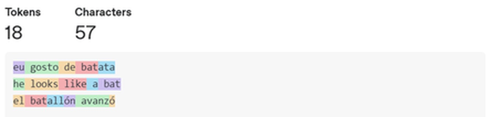
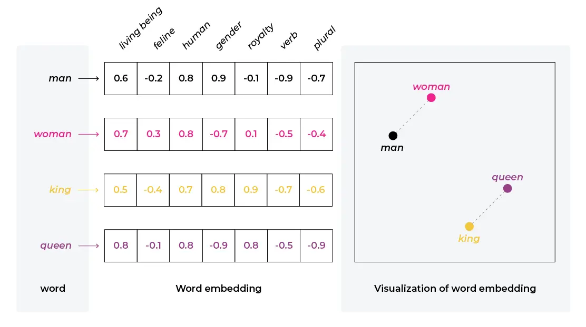
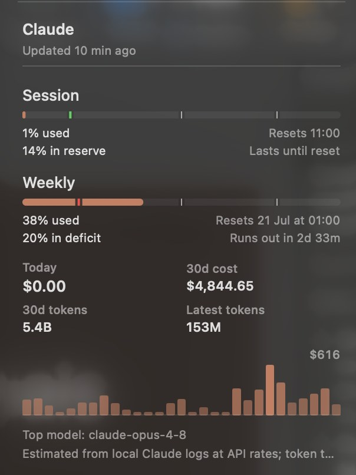
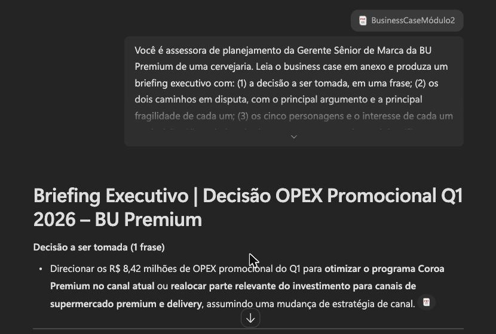
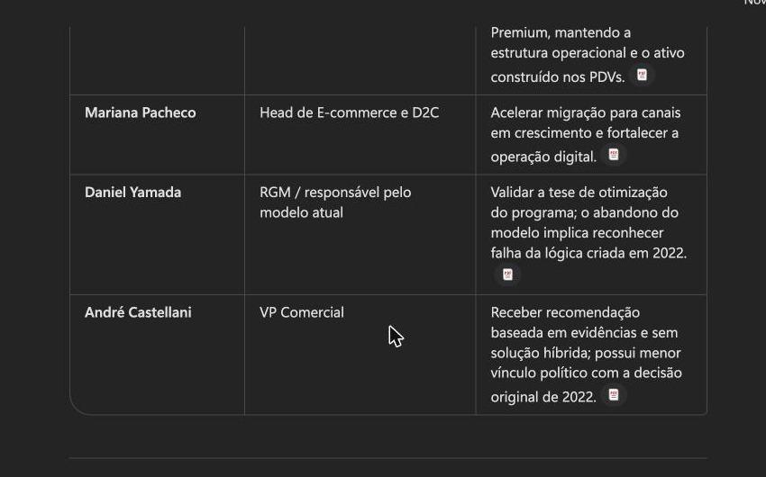
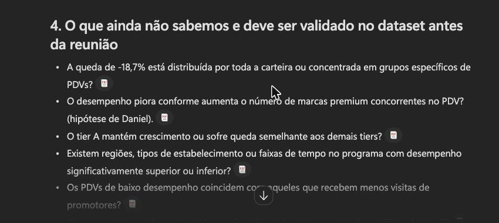
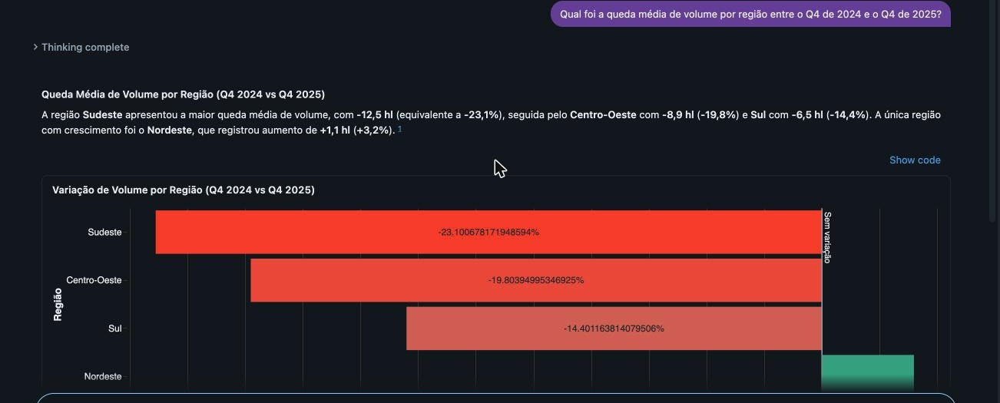
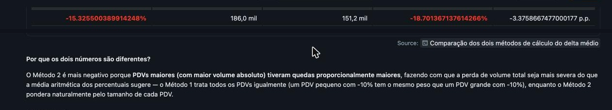

Data Science for Decision Makers · Ambev · Inteli Exec
Professor de IA e Negócios · Inteli
jose.romualdo@prof.inteli.edu.br
linkedin.com/in/jose-romualdo
DSDM Ambev · Módulo 2
2
DSDM Ambev · Módulo 2
3
Objetivo de hoje: usar GenAI para transformar uma leitura inicial em análise verificável, com as ferramentas já disponíveis na companhia.
DSDM Ambev · Módulo 2
4
O modelo lê pedaços de palavra, não palavras. Tudo tem custo e limite medidos em tokens.
O modelo só enxerga o que está na janela de contexto. O que você não deu, ele não sabe.
Cada token é escolhido por probabilidade. A mesma pergunta pode gerar respostas diferentes.
Consequência prática: a qualidade da resposta depende do contexto que o prompt fornece.
DSDM Ambev · Módulo 2
6
Três frases curtas, uma em cada idioma, submetidas ao tokenizer do GPT-4o. O corte não respeita palavra nem fronteira de idioma.

Fonte: platform.openai.com/tokenizer, tokenizador do GPT-4o
batata vira dois tokens, batallón vira três. Palavras fora do vocabulário comum, como marca e jargão interno, fragmentam em mais tokens: contexto interno ocupa mais espaço na janela e custa mais por chamada.
DSDM Ambev · Módulo 2
7

Cada palavra vira um vetor denso de poucas dimensões, em vez de um vetor esparso de altíssima dimensão. Dimensões e valores do diagrama são ilustrativos.
Elementos semelhantes ficam próximos no espaço vetorial, e a distância entre man e woman repete a distância entre king e queen.
Fonte: Arize AI, embeddings: meaning, examples and how to compute (fev/2023)
Implicação para o case: o modelo aproxima sell-out incremental de volume vendido sem que ninguém tenha definido a equivalência. A definição da métrica precisa vir do prompt.
DSDM Ambev · Módulo 2
8
Entrada: Olá, tudo bem com você?
O verde marca o token sorteado. Os demais estavam na mesma distribuição e podiam ter saído.
Entrada: Olá, tudo bem com você? Tudo
O token escolhido entra na entrada da rodada seguinte, e a distribuição inteira muda.
Consequência prática: a mesma pergunta, feita duas vezes, pode produzir respostas diferentes. Análise que precisa ser auditável não pode depender de uma única execução.
DSDM Ambev · Módulo 2
9
Critério de trabalho: todo número citado deve ter coluna e filtro de origem identificáveis no dado.
DSDM Ambev · Módulo 2
10
Tudo o que o modelo enxerga em uma única conversa: o seu pedido, os arquivos anexados, o histórico e a própria resposta.
| Modelo | Janela anunciada |
|---|---|
| Llama 4 Scout | 10 milhões |
| Claude Opus 5 e Sonnet 5 | 1 milhão |
| GPT-5.5 | 1 milhão |
| Gemini 3.1 Pro | 1 milhão |
Na prática a qualidade cai antes do limite: estudos independentes apontam uso confiável de 60% a 70% do que é anunciado.
Fontes: documentação dos provedores, consultada em setembro de 2026
DSDM Ambev · Módulo 2
11
| Livro | Palavras |
|---|---|
| Pedra Filosofal | 76.944 |
| Câmara Secreta | 85.141 |
| Prisioneiro de Azkaban | 107.253 |
| Cálice de Fogo | 190.637 |
| Ordem da Fênix | 257.045 |
| Total | 717.020 |
Janela de contexto de 1 milhão de tokens. Cada quadrado vale 10 mil.
Os cinco livros ocupam 96 dos 100 quadrados, cerca de 956 mil tokens. Sobra pouco espaço para a sua pergunta e para a resposta.
A série completa tem 1.084.170 palavras, cerca de 1,45 milhão de tokens: os sete livros não cabem em uma janela de 1 milhão.
DSDM Ambev · Módulo 2
12
Levantem a mão na faixa que vocês acham que consomem. Vale o uso pessoal e o do time.
| Faixa | Tokens em 30 dias | Perfil de uso |
|---|---|---|
| A | Até 1 milhão | Uso pontual, algumas conversas por semana. |
| B | 1 a 100 milhões | Uso diário para escrita, análise e apoio à decisão. |
| C | 100 milhões a 1 bilhão | Uso intenso, com arquivos grandes e times inteiros. |
| D | Mais de 1 bilhão | Agentes rodando sozinhos, em produção. |
front_hand Guardem o palpite. O próximo slide traz o consumo real de 30 dias de um usuário intenso e quanto ele custaria na API.
DSDM Ambev · Módulo 2
13

US$ 200
por mês na assinatura Max 20x
US$ 4.844
custo equivalente em API nos últimos 30 dias
5,4 bilhões de tokens processados em 30 dias. Modelo mais usado: claude-opus-4-8.
A assinatura absorve o excedente enquanto o provedor decide absorvê-lo. É esse subsídio que o próximo slide coloca em questão.
Estimativa a taxas de API com base nos logs locais do Claude, capturada em 15/07/2026
DSDM Ambev · Módulo 2
14
Quanto mais você usa, mais paga. E os melhores agentes de programação são exatamente os que fazem você usar muito, porque entregam resultado.
É o fim do “ilimitado” por outro ângulo: a conta fora do orçamento aparece no terceiro mês.
DSDM Ambev · Módulo 2
15
Tarefas simples, diretas e pontuais: resumir um e-mail, reescrever um parágrafo, calcular um delta. Um bom prompt resolve.
Tarefas complexas, que pedem contexto, aprofundamento e várias etapas de trabalho: cruzar três fontes, testar hipóteses, montar recomendação.
O caso Coroa Premium é uma maratona, e é por isso que o dia inteiro gira em torno dele.
DSDM Ambev · Módulo 2
16
Conforme o humano sai do loop, a IA assume mais etapas da decisão.
Segue regras fixas e faz sempre igual.
Ex.: regra no ERP que replica o pedido do mês anterior.
Regras humanas
Responde quando é chamado.
Ex.: resumir em três linhas o e-mail da regional.
Decisão humana
Sugere dentro do fluxo de trabalho.
Ex.: Copilot no Excel, Genie no Databricks.
Aprovação humana
Recebe um objetivo e executa as etapas.
Ex.: triagem de pedidos fora do padrão.
Supervisão humana
Hoje operamos assistentes e copilotos. Agentes são conversa para o fim do programa.
DSDM Ambev · Módulo 2
17
Harness · tudo o que existe em volta do modelo
Guias · o que entra antes
Ferramentas e memória
Sensores · o que valida depois
Sem harness o modelo responde, mas não age. Trocar o harness muda o resultado sem trocar o modelo.
DSDM Ambev · Módulo 2
18
Controle humano: Alto
A IA analisa e recomenda; nada é executado sem aprovação humana explícita.
Corte de preço promocional no canal alimentar, verba de trade por região, resposta a órgão regulador. É o nível da recomendação que vocês montam hoje sobre o Coroa Premium.
DSDM Ambev · Módulo 2
19
Controle humano: Médio
A IA decide e age sozinha; a pessoa monitora indicadores e intervém por exceção.
Previsão de demanda por PDV, sugestão de reposição de estoque, alerta de PDV com queda atípica de sell-out.
DSDM Ambev · Módulo 2
20
Controle humano: Nenhum, só auditoria
O ciclo completo é automatizado; a pessoa define os limites antes e audita depois.
Roteirização da frota de entrega em tempo real e alocação de carga no CD, dentro de faixa aprovada.
Pergunta à sala: em qual dos três níveis vocês colocariam hoje a aprovação de verba de trade da sua regional?
DSDM Ambev · Módulo 2
21
Consulta pública, sem resposta errada:
DSDM Ambev · Módulo 2
23
DSDM Ambev · Módulo 2
24
DSDM Ambev · Módulo 2
25
DSDM Ambev · Módulo 2
26
Em duplas (3 min): um processo da sua área candidato a copiloto, e um que nunca deveria ser.
DSDM Ambev · Módulo 2
27
O chat devolveu um delta de -21,4% para uma região, com prosa confiante. O número não existe em nenhuma célula do dataset. O que aconteceu?
DSDM Ambev · Módulo 2
28
R$ 8,42 mi
OPEX promocional do Q1 a alocar
3.847
bares premium no programa
-18,7%
sell-out do programa; mercado premium +9,2%
72h
até a reunião de S&OP
Com qual dos cinco personagens o seu papel mais se parece?
DSDM Ambev · Módulo 2
30
15 min
Leitura em silêncio. Marque no texto o que responde às três perguntas abaixo.
Qual é exatamente a decisão a ser tomada, e por quem?
O que cada um dos cinco personagens ganha ou perde em cada caminho?
Que dado citado no texto sustenta cada caminho? O que ainda não foi verificado?
DSDM Ambev · Módulo 2
31
Framework padrão de projetos de dados, e o mesmo que estrutura as mentorias do Data Lab:
Entender a decisão. A leitura do case e o briefing no Copilot.
Explorar o dataset. Genie, Copilot e chat, hoje de manhã.
Limpar e cruzar. Os cross-tabs de H1 e H2, hoje à tarde.
Modelos preditivos. Módulo 4.
Métricas e impacto financeiro. Módulos 4 e 5.
Recomendação e adoção. Data Lab e banca.
GenAI acelera as fases 1 a 3; não substitui as decisões de cada fase. O projeto do Data Lab percorre o ciclo completo.
DSDM Ambev · Módulo 2
32
O PDF do case entra no chat; sem anexo, o modelo responde de memória.
Persona + 5 blocos pedidos + restrições de formato e de tom.
Conferir cada número citado contra o original antes de usar.
Tabela de personagens e interesses; perguntas de acompanhamento.
Lista do que validar no dataset: a entrada do trabalho no Genie.
Fases 1 e 2 do CRISP-DM em uma conversa: entendimento do negócio antes de tocar no dado.
DSDM Ambev · Módulo 2
33
Prompt: persona de assessora de planejamento + case anexado + 5 blocos pedidos (decisão, caminhos, personagens, dados, pendências) + restrições de formato e tom.

Fonte: M365 Copilot com o PDF do case anexado
Compressão de leitura: 8 páginas viram uma. A verificação contra o original continua obrigatória.
DSDM Ambev · Módulo 2
34

Fonte: M365 Copilot, mesmo briefing
Leitura dos interesses: repertório de vieses do Módulo 1.
DSDM Ambev · Módulo 2
35
Bloco 5 do mesmo briefing: "o que ainda não sabemos e precisaria ser verificado no dataset antes da reunião".

Fonte: M365 Copilot, mesmo briefing
Sem acesso ao dataset, o modelo listou como pendências as mesmas duas hipóteses do Exhibit 3. A lista é o passo 5 do roteiro: a entrada do trabalho com o Genie.
DSDM Ambev · Módulo 2
36
Manter o programa e segmentar os 3.847 PDVs em tiers de resposta: 70% da verba nos ~1.150 de alta resposta, zero nos ~1.450 sem resposta. Aposta: o problema é de qualidade de alocação.
Realocar metade da verba para supermercado premium e delivery; reduzir o programa a 1.500 PDVs core. Aposta: o problema é estrutural do canal. Risco: cláusula contratual de 2.500 PDVs.
Híbrido vetado pelo VP. A verba é integralmente consumida por qualquer um dos dois.
DSDM Ambev · Módulo 2
37
Cruzar delta_volume_yoy_pct com concorrentes_premium_no_pdv. Se a queda estiver concentrada num subgrupo, o Caminho A ganha força. Se for uniforme, o canal está afundando.
Correlação entre visitas_promotor_mes e delta nos PDVs de tier C. Se visita não gera resposta, parte da operação de campo é desperdício.
Os dois cruzamentos estão no dataset e são o exercício desta tarde.
DSDM Ambev · Módulo 2
38
Pergunta em linguagem natural sobre a tabela. Rápido para explorar, opaco quando agrega errado.
Análise assistida onde a planilha já vive. Ótimo em tabela dinâmica, limitado em cruzamentos profundos.
Claude e ChatGPT executando Python sobre o CSV. O mais flexível, exige o melhor prompt.
Reprodutível e auditável. Hoje, gerado por IA, nunca escrito do zero.
Cada ferramenta tem vieses, limites e falhas diferentes; a mesma pergunta pode produzir resultados distintos.
DSDM Ambev · Módulo 2
39
Prompt: "Qual foi a queda média de volume por região entre o Q4 de 2024 e o Q4 de 2025?"

Fonte: Databricks Genie sobre dev.default.coroa_premium_pdv_performance
O Genie exibe o SQL gerado; conferir o SQL é a forma de auditar a resposta.
DSDM Ambev · Módulo 2
40
"Qual o delta médio?" tem duas respostas verdadeiras neste dataset:
-15,3%
média simples dos deltas por PDV
-18,7%
queda do volume total, ponderada pelo tamanho do PDV
3,4 pontos percentuais entre dois cálculos legítimos do mesmo dado.
Prompt que desfaz a ambiguidade: "Calcule de dois jeitos e mostre lado a lado: (1) a média simples de delta_volume_yoy_pct por PDV e (2) a variação do volume total. Explique em uma frase por que diferem."

Fonte: Databricks Genie, mesma tabela e conversa
A pergunta era ambígua; o prompt precisa especificar o método de cálculo.
DSDM Ambev · Módulo 2
41
timer 20 minutos. Cada mesa reporta a surpresa em uma frase.
DSDM Ambev · Módulo 2
42
O cruzamento que responde a essa pergunta é o exercício do bloco das 13h30.
DSDM Ambev · Módulo 2
43
Do texto do case: "a escolha do prompt é, em si, parte da análise".
Os próximos slides sobem do nível 0 ao nível 3, e cada degrau existe porque o anterior não fechou a pergunta. No caminho, a H1 e a H2 ficam testadas.
DSDM Ambev · Módulo 2
45
| Letra | O que define | Exemplo aplicado ao Coroa Premium |
|---|---|---|
| C · Character | O papel e a expertise da IA | "Você é analista de trade marketing da BU Premium." |
| R · Request | A tarefa central e específica | "Diga se a queda de volume é concentrada ou uniforme." |
| E · Examples | O padrão de saída esperado | "Uma linha por faixa de concorrentes, sem prosa." |
| A · Additions | Audiência, restrições e riscos | "Para gerente de marca sem formação técnica." |
| T · Type | Formato e estrutura da entrega | "Tabela: faixa, PDVs, delta médio, % abaixo de -15%." |
| E · Extras | Dados e premissas que ancoram | "Base: 3.847 PDVs, Q4 2024 contra Q4 2025." |
Toda vez que um pedido à IA frustrar, provavelmente falta uma dessas letras.
DSDM Ambev · Módulo 2
46
Prompt
Analise esses dados do programa e me diga o que há de interessante.
Por que falha
Saída: "são 3.847 PDVs em 4 regiões, o volume caiu, o tier A concentra o volume." Tudo verdadeiro, nada decidível.
DSDM Ambev · Módulo 2
47
Prompt
Você é analista de trade marketing da BU Premium de uma cervejaria. Analise o CSV delimitado abaixo (Coroa Premium, Q4 2024 contra Q4 2025, uma linha por PDV). Responda para uma gerente de marca SEM formação técnica: onde a queda está pior, por região e tier? E três números para a reunião de S&OP. Sem jargão estatístico. Cite a coluna de origem de cada número. Termine com "O QUE EU AINDA NÃO SEI". <dados> ...csv... </dados>
O que acabou de mudar
A resposta deixa de descrever e passa a recomendar. É o P1 do caderno. Ainda não responde se a queda é concentrada.
DSDM Ambev · Módulo 2
48
Prompt
Cruze delta_volume_yoy_pct com concorrentes_premium_no_pdv. Saída OBRIGATÓRIA, tabela markdown, uma linha por faixa: | faixa (0-1, 2, 3+) | nº de PDVs | delta médio | % abaixo de -15% | Depois da tabela, responda em uma frase: a queda do programa é uniforme entre os PDVs ou concentrada em alguma faixa? Não escreva mais nada além da tabela e da frase.
O que acabou de mudar
É o P2 do caderno, e é o pedido que testa a H1. Vocês preenchem a tabela no hands-on; o resultado consolidado vem no debrief.
DSDM Ambev · Módulo 2
49
Prompt
Você é um analista cético contratado para DERRUBAR a conclusão anterior. Raciocine passo a passo ANTES de concluir: 1. Cite a evidência da tabela que sustenta a concentração da queda. 2. Procure uma explicação alternativa nos dados: região, tier, meses_no_programa, evento_ativacional_2025. 3. Classifique a hipótese como CONFIRMADA, INSUFICIENTE ou CONTRADITA. 4. Liste o que precisaria existir no dado para mudar o veredito.
Por que funciona
Chain of Thought mais papel adversarial: mitigação direta do viés de confirmação visto no Módulo 1.
DSDM Ambev · Módulo 2
50
Princípios as diretrizes que garantem que o modelo entenda o pedido: especificidade, estrutura lógica, tonalidade e iteração.
Tipos as formas de interação, conforme o objetivo: criativo, informativo, comparativo, iterativo.
Estratégias o como: N-Shot, Auto Prompt, Role Playing, Chain-of-Thought, e as demais que aparecem nos hands-on.
DSDM Ambev · Módulo 2
51
DSDM Ambev · Módulo 2
52
timer 30 minutos + debrief de 10. As mesas comparam cross-tabs.
DSDM Ambev · Módulo 2
53
Debrief do hands-on 2: o cross-tab do P2 sobre os 3.847 PDVs da base.
| Concorrentes no PDV | PDVs | Delta médio |
|---|---|---|
| 0 ou 1 | 2.105 | -3,0% |
| 2 | 644 | -14,9% |
| 3 ou mais | 1.098 | -39,2% |
A concentração sustenta o Caminho A, de afiar a carteira. A leitura de canal afundando por inteiro não descreve este dado.
DSDM Ambev · Módulo 2
54
Você quer que três mesas diferentes produzam o MESMO cruzamento, comparável linha a linha, sem prosa em volta. Qual técnica resolve?
DSDM Ambev · Módulo 2
55
Gere um script Python (pandas) que responda:
"nos PDVs de tier C, a frequência de visita do promotor
explica o delta de volume?"
O script deve: carregar Coroa_Premium_PDV_Performance.csv;
filtrar tier_historico == "C"; calcular a correlação entre
visitas_promotor_mes e delta_volume_yoy_pct; repetir para os
tiers A e B como comparação; imprimir uma tabela com os três
valores e uma interpretação em linguagem simples, sem os
termos "coeficiente" ou "regressão".É o P3: o teste da H2. O prompt descreve a pergunta, não o código; a sintaxe fica com a IA.
DSDM Ambev · Módulo 2
57
KeyError: 'visitas_promotor'
A coluna que o script pediu
não existe no CSV. A coluna
real chama-se
visitas_promotor_mes.DSDM Ambev · Módulo 2
58
A mesma pergunta retornará no trimestre seguinte; o script responde sem retrabalho.
DSDM Ambev · Módulo 2
59
Com os resultados de H1 e H2 acima, escreva um e-mail de
no máximo 12 linhas para o VP Comercial:
- primeira frase: a resposta (a queda é concentrada ou não);
- três evidências, cada uma com número e origem;
- uma implicação para a decisão entre Caminho A e Caminho B;
- uma ressalva honesta do que os dados NÃO mostram.
Tom: direto, sem jargão, sem adjetivos de entusiasmo.Último passo do fluxo: transformar a análise em comunicação executiva para a decisão.
DSDM Ambev · Módulo 2
60
timer 35 minutos. O achado de H2 entra na recomendação final.
DSDM Ambev · Módulo 2
61
Prompt
A visita do promotor converte em volume? Calcule a correlação entre visitas_promotor_mes e delta_volume_yoy_pct, separada por tier_historico. Uma linha por tier: tier, nº de PDVs, correlação, leitura em uma frase. Não afirme causa. Diga apenas o que a correlação sustenta.
Resultado
| Tier | Correlação | Leitura |
|---|---|---|
| A | +0,55 | mais visita acompanha delta melhor |
| B | +0,34 | acompanhamento fraco e positivo |
| C | -0,53 | mais visita acompanha delta pior |
Debrief do hands-on 3. H2 testada: em tier C a rota do promotor está concentrada nos PDVs que mais caem, sem conversão em volume. É o argumento para zerar verba nos cerca de 1.450 PDVs sem resposta, que o Caminho A propõe.
DSDM Ambev · Módulo 2
62
O entregável do dia é uma decisão de negócio em linguagem executiva, não um relatório técnico.
DSDM Ambev · Módulo 2
64
Aqui está a recomendação que vamos apresentar: [cole o slide].
Você é o VP Comercial, cético e pressionado.
1. Ataque a recomendação: as três perguntas mais duras que
ela não responde.
2. Aponte qual evidência é a mais frágil e por quê.
3. Diga o que faria você decidir pelo caminho oposto.
Depois, reescreva a recomendação incorporando o que sobreviveu.Auditoria da recomendação antes do comitê; mitiga o viés de confirmação apresentado no Módulo 1.
DSDM Ambev · Módulo 2
65
Para cada um: o prompt final, a saída, o que falhou antes, e quando aquela técnica compensa. Entrega no fim do dia.
DSDM Ambev · Módulo 2
66
DSDM Ambev · Módulo 2
67
DSDM Ambev · Módulo 2
68